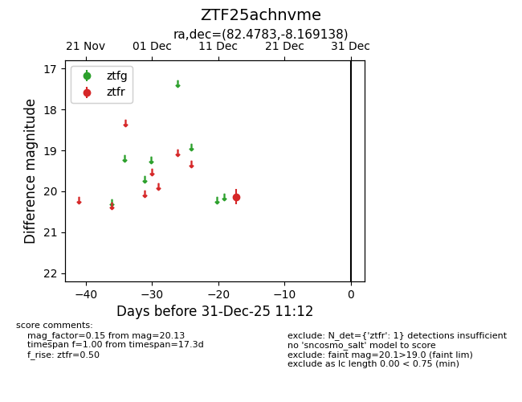
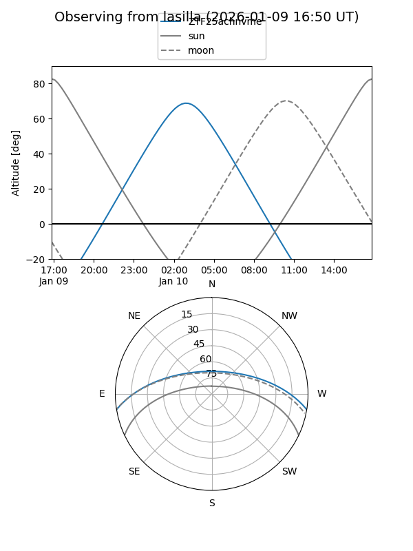
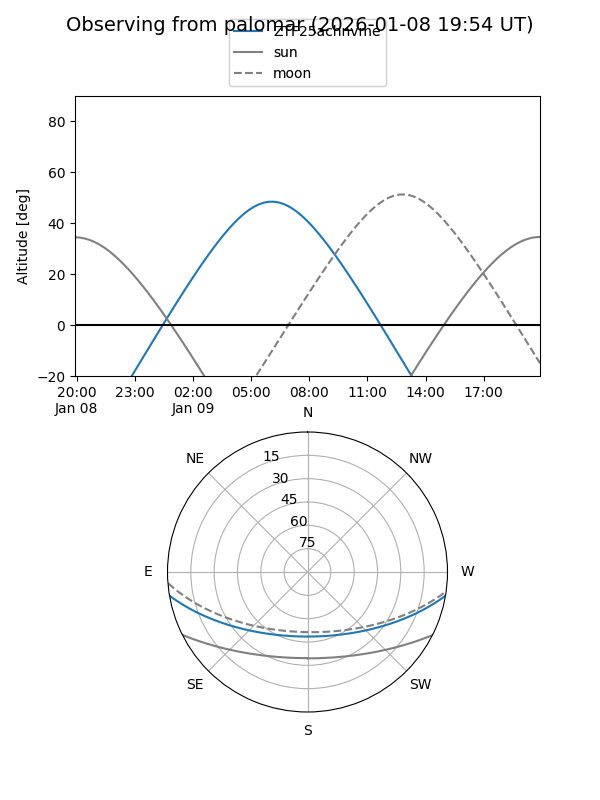

ZTF25achnvme
Target ZTF25achnvme at 2026-01-09 12:49
Aliases and brokers:
FINK: link
Lasair: link
ALeRCE: link
alt names
ZTF25achnvme (ztf,fink_ztf)
Coordinates:
equatorial (ra, dec) = 82.4783,-8.16914
equatorial (HMS+DMS) = 05:29:54.79,-08:10:08.90
galactic (l, b) = (211.0352,-21.81429)
Flags:
Photometry:
last ztfr=20.13
1 ztfr detections
Lightcurve

Visibility


Additional plots